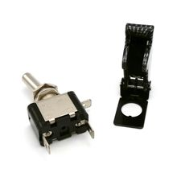

Тумблер с защитной крышкой с подсветкой (карбон) 12В
МеханикаЭто тумблер с защитной крышкой и подсветкой на 12 В, выполненный в стиле «карбон». Такие переключатели обычно используют как управляющий выключатель в авто- и моделистской технике, где важны защита от случайного срабатывания и заметная индикация.
По названию это не отдельный брендовый компонент, а типовой защищённый тумблер с откидной крышкой и встроенной подсветкой. Крышка нужна, чтобы исключить случайное включение, а подсветка — чтобы переключатель было видно в тёмном салоне или на панели. Маркировка «12V» указывает на работу с бортовой сетью 12 В или на питание подсветки от 12 В. Исполнение «карбон» относится к декоративной накладке/дизайну крышки или корпуса, а не к электрическим параметрам. Точное семейство и параметры у таких изделий сильно зависят от конкретного OEM-поставщика, поэтому без datasheet лучше не фиксировать токи и габариты.